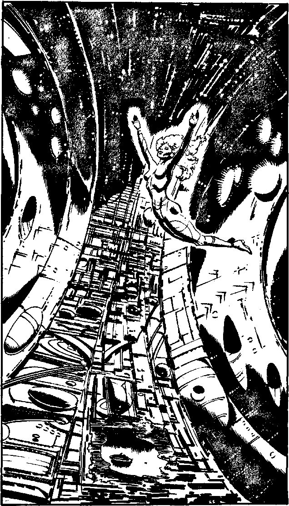

335
Through CAIN you order that a shuttle be prepared for your trip to Spiro's Ringworld and waste no time. You run from the doors of the Vault across the launch bay to the small, dart- shaped shuttle with its huge, ungainly drive vents, each as large as the cabin. The navigational computer is already set as you strap into the Acceleration Web behind the pilot. With a flash of light the Ion Drive fires and you are accelerated sickeningly quickly. This is a Navy pilot - she has never flown civilian craft. Minutes later the Docking Computer locks onto the Ringworld, a glittering disc twenty miles across, turning silently in space and the deceleration is equally unpleasant. As you step out into the air-lock, the pilot turns and smiles, 'You stood that well - you must be fit.' You ask her to stand by for your return journey and enter the Ringworld.
Lord Pilota's assistant meets you as you emerge from the air- lock and, helping you into a jet pack, points up into the empty centre of the so-called Ringworld. You are standing on the inside rim of the disc which is rotating quickly enough to produce a gravity not far below that of Earth's. Looking up, you see the tops of the buildings, twenty miles away on the opposite side of the Rim. The assistant explains that Lord Pilota is in the gravity free zone, or free fall area, in the centre of the disc, half way to the other rim. You blast off with him confidently enough, and head for the centre of the rimworld. As you approach you see Lord Pilota, spinning slowly, head over heels, apparently at ease without the hydraulic exoskeleton she uses in Earth gravity. With a shock you realise that you cannot adapt easily to free fall and accidentally cannon into her, sending you both towards the other rim. She steadies you easily and with two deft jet-pack blasts returns you to a stationary position in free fall. She speaks, her voice high-pitched in the thin air. 'Falcon, you've come all this way to see me. Why? What is so important?' Will you:
| Accuse her of trying to change the past? | Turn to 340 |
| Tell her that a Lord of TIME has been interfering with the Timelines and ask for help? | Turn to 391 |
| Ask if she has information for you? | Turn to 87 |